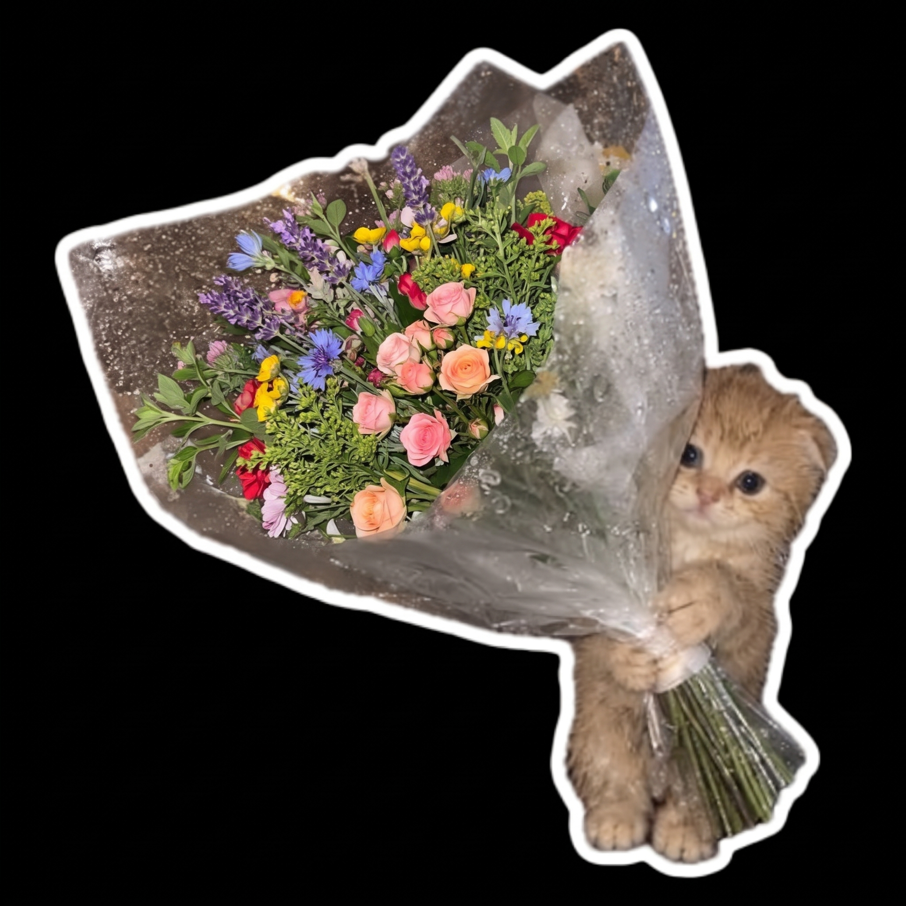

For you · with care
Some things
are lovely
just as they are.
Just a little note for you, Madeline.

Flowers,for you.
Press play, if you like
A song that says
what I mean.
“Just the Way You Are” — because there’s something beautiful about being appreciated without needing to change a thing.
A little song for you. Press play and enjoy.
Open in Spotify ↗ A little dedication · Spotify
A note, from me to you
Something I wanted
to say properly.
Some things feel better when they're said honestly. I wrote this for you, Madeline.
One last thing
May life bring you
beautiful little things.
Good music. A lovely bouquet. A spontaneous drive.
Reasons to dance, and days that feel like you.
Made with care · October 2026